Component symbols and simple circuits
In this chapter, you will revise the work you did on electrical systems and control in Grade 8. You will also revise simple circuits, circuit diagrams and connecting cells, and lamps and switches in series and parallel. You will then do action research on the effects of changing the voltage in a circuit.

Figure 1: A torch
Revision 1: component symbols
"Components" are the parts that we connect in an electric circuit.
Do you remember the symbols for cells, lamps and switches?
Do you remember the difference between joining components in series and in parallel? Let's see what you can remember.
You have already learnt that an electric circuit is a closed path in which a current flows.
The simplest circuit has:
- a power source such as a cell,
- a conductor, and
- a load that provides resistance, such as a lamp.
Cells in series
Two or more cells can be connected in series to increase the voltage in the circuit. Figure 2 below shows two cells connected in series in a circuit. The positive terminal of cell A is connected to the lamp.
The negative terminal of cell A is connected to the positive terminal of cell B, and the negative terminal of cell B is connected to the other terminal of the lamp.
In series means the cells are connected end-to-end, and the current flows through each cell in turn.
1. Draw a circuit diagram of the circuit in Figure 3 in the space to the right of it.
Figure 2: Two cells in series connected to a lamp
2. Figure 3 below shows three cells connected in series in a circuit. Draw a circuit diagram of the circuit in the space to the right of Figure 3.

Figure 3: Three cells in series connected to a lamp
When cells are connected in series, their total voltage is the sum of the voltages of the three cells: 1,5 V + 1,5 V + 1 ,5 V = 4,5 V
Cells in parallel
Two or more cells can also be connected "in parallel". A parallel circuit has two or more different paths for the current to travel along.
Figure 4 below shows two cells connected in parallel in a circuit. The positive terminals of both cells are connected to each other and to the lamp. The negative terminals of both cells are connected to each other and to the other terminal of the lamp.
3. Draw a circuit diagram of the circuit in Figure 4 in the space to the right of it.

Figure 4: Three cells in parallel connected to a lamp
Lamps in series
Two or more lamps can also be connected in series.
The pictures below show circuit diagrams of two and three lamps connected in series with the battery. The positive terminal of the battery (+B) is connected to lamp 1, the other side of lamp 1 is connected to lamp 2, the other side of lamp 2 is connected to the negative terminal (B-) of the battery, and so forth.
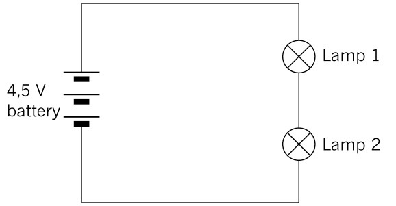
Figure 5: Two lamps in series
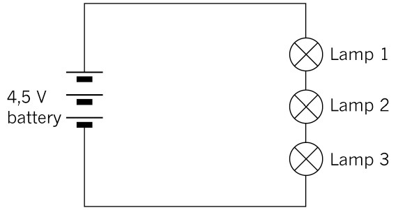
Figure 6: Three lamps in series
4. How does increasing the number of lamps in series change the current and voltage in the circuit?
If all the lamps have the same resistance, the voltage drop across each lamp will be equal to 1,5 V. When the voltage drops of all the lamps are added, the total battery voltage of 4,5 V is obtained. The current is the same through each lamp.
Lamps in parallel
Two or more lamps can also be connected to the battery in parallel, as shown in the pictures below. The positive terminal of the battery is directly connected to one side of each lamp and the negative terminal to the other side of each lamp.

Figure 7: Circuit diagram of two lamps in parallel
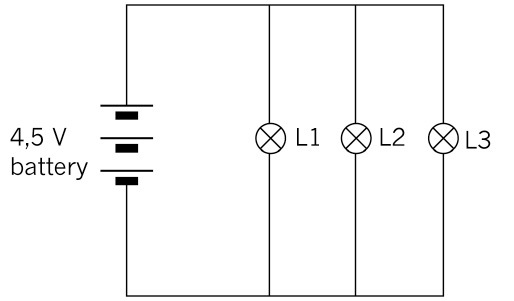
Figure 8: Circuit diagram of three lamps in parallel
The applied voltage is the same across each lamp. The current is divided across each lamp, and the total current is the sum of the current through each lamp: It = I1 + I2 + I3
5. Look at the circuit diagram below and answer the following questions:
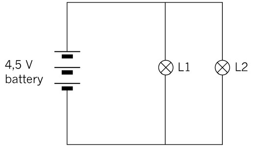
Figure 9
(a) What is the voltage drop across lamps 1 and 2?
(b) The total current in the circuit is 10 A. If lamp 1 has a current of 4 A flowing through it, what will the current be through lamp 2?
Switches in series and parallel
In a circuit with one switch, the switch controls whether the current flows through the circuit or not. If the switch is open, no current flows, as the circuit is not completed. The closed switch allows the current to flow.

Figure 10: Symbols for an open switch and a closed switch
We can use two or more switches to control components in a circuit in more complex ways.
In a logic circuit, an open switch is regarded as having a value of 0, and a closed switch as having a value of 1.
The switches are the inputs that control the final state of the circuit.
If the circuit is not completed, the output is in the OFF state and has a value of 0. If the circuit is completed, the output is in the ON state and has a value of 1.
Switches in series
In the circuit below, there are two switches in series. This gives us four different switch combinations. They are:
- Switch A and B both open,
- Switch A open and B closed,
- Switch A closed and B open, and
- both switches closed.
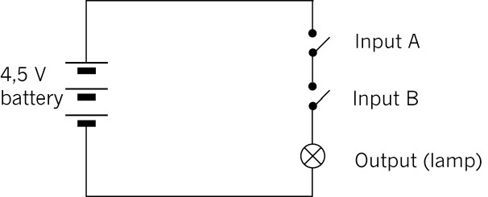
Figure 11: Circuit with two switches in series
Do you see that the current cannot flow through the circuit if either switch A or switch B is open? Both of them must be closed for the lamp to glow.
6. In the table below, "0" means off or open, and "1" means on or closed. Complete the table to show all the different combinations possible in the circuit in Figure 11. To help you, the first two rows of the table have already been completed. Make sure you understand those two rows before you complete the rest of the table
|
Input A |
Input B |
Output |
|
0 |
0 |
0 |
|
0 |
1 |
0 |
|
1 |
0 |
|
|
1 |
1 |
The table showing these combinations is called a truth table.
Both switch A and switch B must be closed for the circuit to be completed (an output of 1). So we can see that switches connected in series give us an AND function.
Switches in parallel
In the circuit below, there are two switches in parallel. This also gives us four different switch combinations.
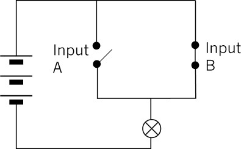
Figure 12: Circuit with two switches in parallel
Do you see that the current can go through the closed switch, even if the other switch is open?
7. Complete the truth table below for the circuit in Figure 12.
|
Input A |
Input B |
Output |
The truth table shows that when switch A or switch B is closed, the output will be 1 (the lamp will be on). We call switches in parallel an OR function.
Questions for homework
1. Would the lamp light up in each of these circuits? Explain your answer.
(a)
Figure 13
(b)
Figure 14
(c)
Figure 15
2. A kettle must be switched on at the wall plug first and then at the kettle itself.
(a) Fill in the truth table to show all the possible combinations.
|
Wall plug switch |
Kettle switch |
Output |
(b) Is this an AND function or an OR function? Explain your answer.
Revision 2: simple circuits
In this lesson, you will set up simple circuits, revising what you learnt about setting up circuits in Grade 8.
You will need the following for this activity:
- two AA cells in cell holders,
- connecting wires,
- a switch, and
- two lamps.
Note that you can use a homemade switch and a cell holder made of insulation tape for this activity.
1. Look at the circuit below.
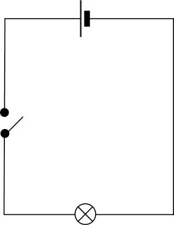
Figure 16
Set up this circuit and check that it works by closing the switch.
(a) Does the lamp light up?
When you have the circuit working correctly, move on to question 2. If you need to, you can troubleshoot your circuit by looking at the following:
- If the lamp doesn't light up, but the wires get hot, you may have a short circuit. This means that the lamp is not connected correctly in the circuit, or that it is faulty. Check that the lamp is connected correctly in the circuit.
- If the lamp still doesn't light up, check each component and connecting wire by replacing them, one by one. You can identify which one is faulty this way.
2. Add another lamp to the circuit in series with the first one.
(a) Draw a circuit diagram for this circuit.
(b) What do you notice about the brightness of the lamps?
3. Set up the same circuit, but add another bulb in series with the first bulb.
(a) Draw a circuit diagram for this new circuit.
(b) Write what you notice about the lamps in this circuit.
4. Write down your conclusions about changing the number of cells and the number of lamps in the circuit.
Testing voltage and current in circuits
In this lesson, you will investigate the relationship between the value of the voltage and the current in a circuit. You will need to use a multi-meter that can be set to measure the voltage, resistance or the current in a circuit.
V: volts (potential)
A: amps (current)
Ω: ohms (resistance)
Begin by reading the text below on how to use a multi-meter correctly.
Measuring resistance
Identify the section labelled "Ω" on the multi-meter in the picture below.
- Connect the red test lead to the "V ΩmA" terminal, and the black test lead to the "COM" terminal.
- Adjust the function selector switch to "Ω".
- Connect the ends of the test leads across the unknown resistor as shown. Ensure that the resistor is isolated from any other component or power supply.
- Read the value of the resistor from the display, and if necessary adjust the dial to ohm, Ω, to obtain a good reading. Do this in whole numbers rather than in decimals.
Figure 17: Multi-meter set and connected to measure resistance
Measuring voltage
Identify the section labelled "DCV" on the multi-meter in the picture below.
- Connect the red test lead to the "VΩ mA" terminal, and the black test lead to the "COM" terminal.
- Adjust the range selector to the "DCV".
- Set the meter on the highest range.
- Connect the other ends of the test leads parallel across the part of the circuit where the voltage is to be measured: red test lead to positive (+), and black test lead to negative (-).
- Read the voltage from the display. You may need to adjust the voltage selector until a good reading is displayed. Do this in whole numbers rather than in decimals.
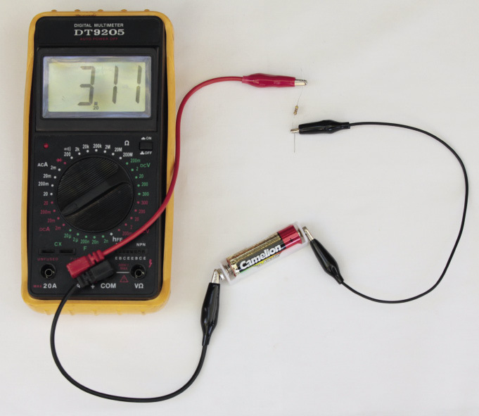
Figure 18: Multi-meter set and connected to measure current
Measuring current
Identify the section, labelled "DCA" on the multi-meter in Figure 18.
- Connect the red test lead to the "VΩmA" terminal and the black test lead to the "COM" terminal. If the current to be measured is between 200 mA and 10 A, connect the red test lead to the "10 A" terminal.
- Adjust the range selector to the "A" (ampere) region. If you are measuring an unknown current, start from the highest range, then adjust to a proper lower range for the best accuracy.
- Connect the other ends of the test leads in series with the part of the circuit where the current is to be measured. (Disconnect the circuit and place the meter in series.)
- Read the current value from the display.
Action research
You will need the following for this activity:
- three penlight cells (AA) in holders,
- a 500 ohm resistor, with the colour bands exactly as in Figure 19, and
- two multi-meters, or an ammeter and a voltmeter.

Set up the circuit as shown in Figure 20 below, using a cell, resistor and ammeter. If you use a multi-meter instead of an ammeter, set it on the amps scale.
In the next chapter, you will learn how the colour bands on a resistor tell you the resistance (ohms).
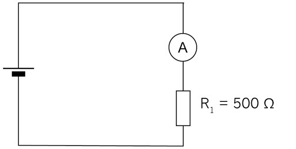
Figure 20: Circuit with one cell, resistor and ammeter
Now connect a voltmeter across the resistor, as shown in Figure 21. If you use a multi-meter instead of a voltmeter, set it on the volts scale.
An ammeter is always connected in series with the part of the circuit for which you measure the current, so that it measures the full current through that part of the circuit. It has a very small resistance so that it does not change the current in the circuit.
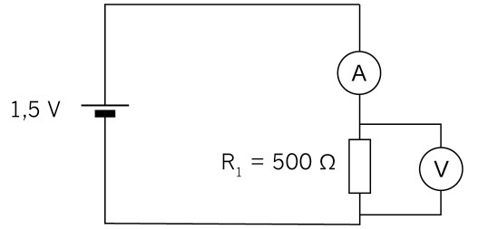
Figure 21: Circuit with one cell, resistor, ammeter and voltmeter across resistor
A voltmeter is always connected in parallel with the part of the circuit for which it measures the potential difference between two points. Very little current flows through a voltmeter since it has a very high resistance.
1. Record the reading:
Now connect a second cell in series as shown in the circuit diagram below:
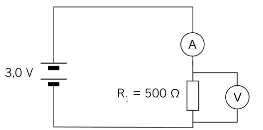
Figure 22: Circuit with two cells in series, resistor, ammeter and voltmeter across resistor
2. Record the reading:
Now connect a third cell in series as shown in Figure 23.
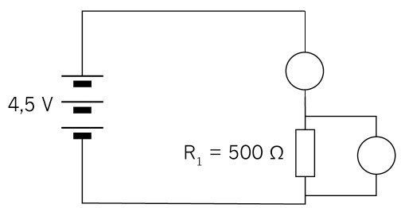
Figure 23
3. Record the reading:
4. Fill in your readings on the table below:
|
With one cell |
With two cells |
With three cells |
|
|
Voltage |
|||
|
Current |
5. Plot the readings on the graph paper below.
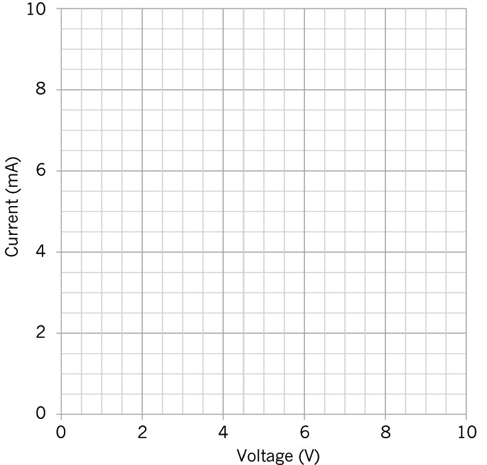
Figure 24: Graph of the relationship between potential difference and current
6. Describe the relationship between voltage and current for a 500 W resistor.
- Did you notice that as the voltage is increased the current increases?
- Is your graph in a straight line?
There is a directly proportional relationship between voltage and current. As the voltage is doubled, the current will double; and as the voltage is tripled the current will triple.
Next week
Next week, you will look at different kinds of resistors used in circuits. You will also practise doing calculations using the formulas in Ohm's Law.